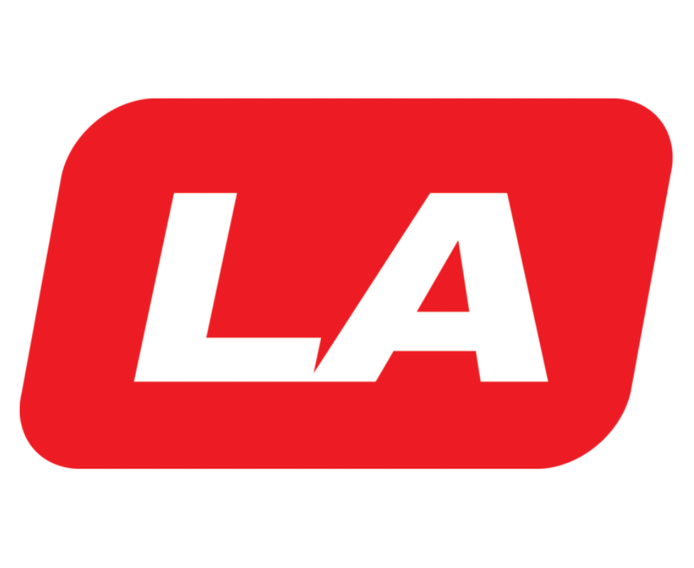
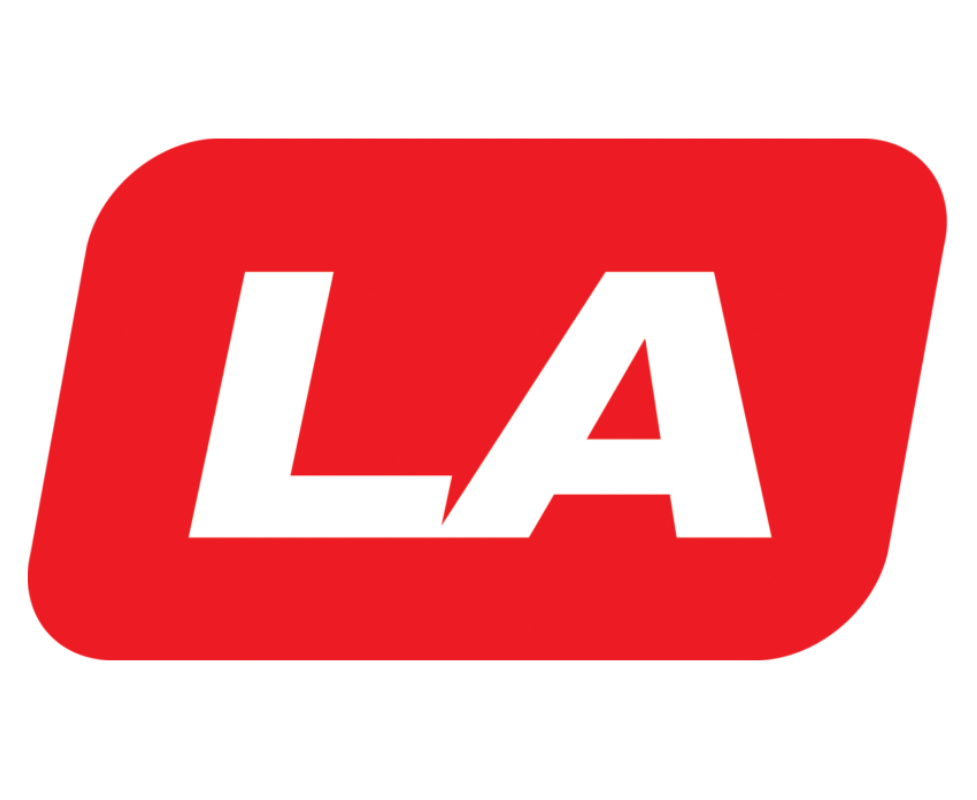

Qui sommes-nous ?
Nous sommes deux jeunes mélomanes qui avons toujours rêvé de vivre la musique autrement. Pas seulement l’écouter, mais la ressentir, la traverser, l’habiter. À l’origine, nos voyages spatio-temporels n’étaient ni pensés pour être partagés, ni destinés à être commercialisés. C’était une quête personnelle, presque secrète. Concert après concert, époque après époque, nous avons multiplié les voyages, accumulé les expériences, observé, appris. Aujourd’hui, après de nombreux allers-retours dans le temps, nous avons décidé d’ouvrir ces souvenirs et de raconter ce que nous avons vu, entendu et vécu, là où l’histoire de la musique s’est écrite.
Ce soir là, j’ai vu QueenJ’ai encore les oreilles qui bourdonnent et les bras fatigués d’avoir été levés trop longtemps. Il faisait chaud, la foule était dense, mais je n’ai jamais eu l’impression d’être aussi à ma place. Quand Queen est arrivé sur scène, tout s’est confondu : les cris, la musique, les lumières. J’ai chanté sans réfléchir, crié sans retenue, comme si personne ne me regardait. Ce concert n’était pas juste un spectacle, c’était une parenthèse.

L’air vibrait déjà avant que la musique ne commence.Led Zeppelinest monté sur scène et tout est devenu plus lourd, plus dense. Les guitares remplissaient l’espace sans laisser de place au silence, la batterie frappait comme quelque chose de primal. Je me suis laissée porter, presque immobile, absorbée par cette puissance brute. Ce n’était pas un concert que l’on regarde, c’était un concert que l’on subit, dans le bon sens du terme. En sortant, j’avais l’impression que mes oreilles bourdonnaient encore, comme si la musique refusait de me quitter.
Je crois que je n’oublierai jamais ce jour. VoireThe Beatles, c’était plus qu’un concert, c’était un événement. Les cris couvraient parfois la musique, mais personne ne s’en plaignait. On riait, on pleurait, on hurlait sans trop savoir pourquoi. J’avais l’impression d’être au milieu d’un moment historique, sans encore comprendre à quel point il le deviendrait. Les Beatles étaient là, réels, juste devant moi, et pourtant tout semblait irréel. En rentrant, je savais seulement une chose : j’avais assisté à quelque chose qui ne se reproduirait jamais de la même façon.
Nos Partenaires


 
